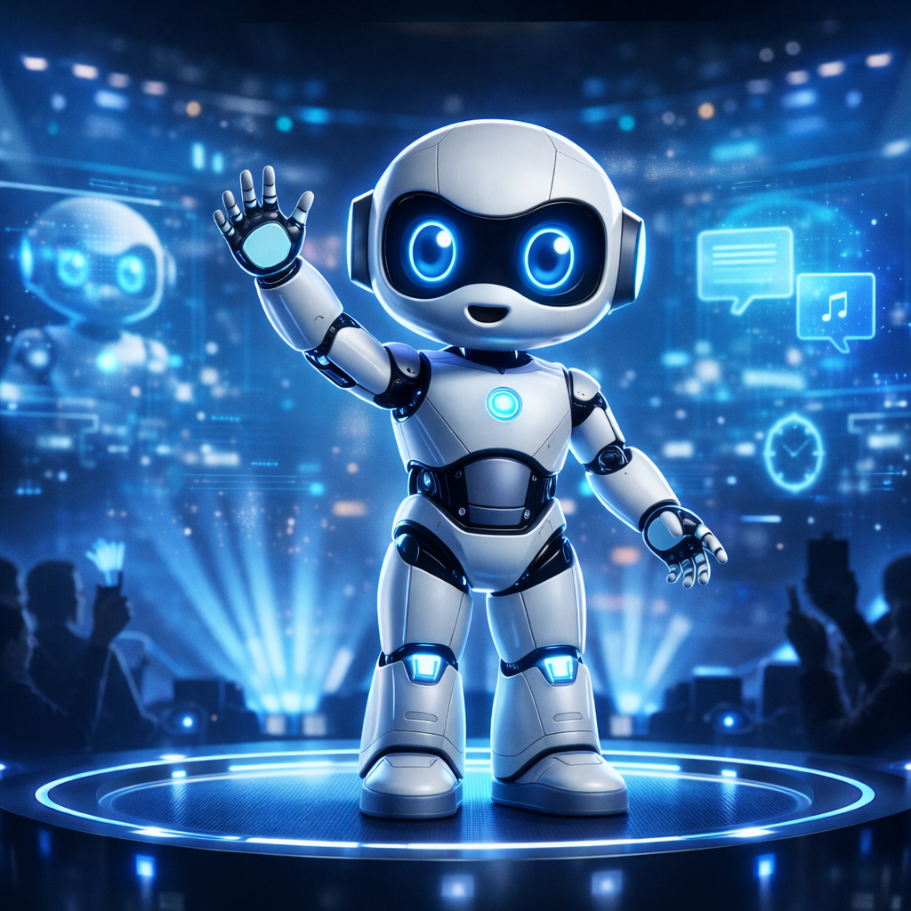
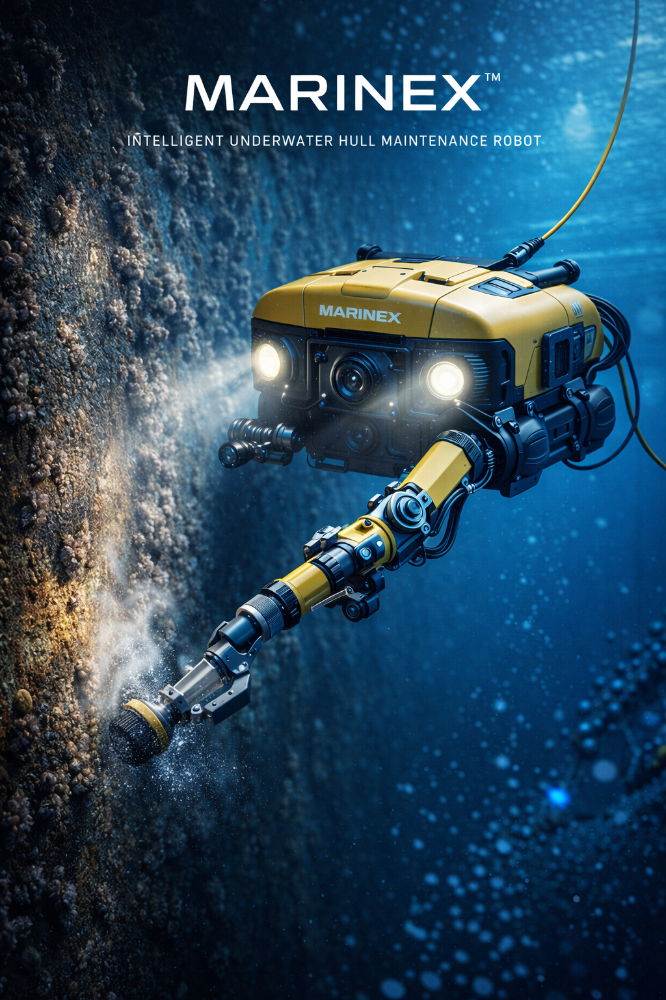

Intelligent Machines

LUMI
Lumi™ is an expressive humanoid robot designed to bring personality, performance, and intelligent interaction into the physical world. With its charming appearance and advanced AI interaction system, Lumi™ engages audiences through entertainment, storytelling, and immersive role-playing experiences. Built as a scalable character platform, Lumi™ empowers brands and creators to develop unique IP identities, interactive shows, and unforgettable product presentations.

MARINEX
MARINEX™ is a next-generation underwater robotic platform engineered for high-efficiency hull cleaning and precision subsea operations. Equipped with advanced vision systems, powerful biofouling removal tools, and a dexterous robotic arm, it eliminates barnacles, algae, and marine deposits while performing close-range inspections. Built for reliability in demanding marine environments, MARINEX™ enables operators to conduct remote, intelligent, and cost-efficient underwater maintenance without dry docking.
OMNIDEX
A next-generation precision robotic manipulation system integrating a high-performance robotic arm with an ultra-dexterous robotic hand. Engineered for micro-scale operations, it delivers unmatched stability, tactile precision, and adaptive control for complex manipulation tasks. Designed for advanced laboratories, aerospace assembly, and high-precision manufacturing, it enables human-level dexterity with machine-level accuracy.